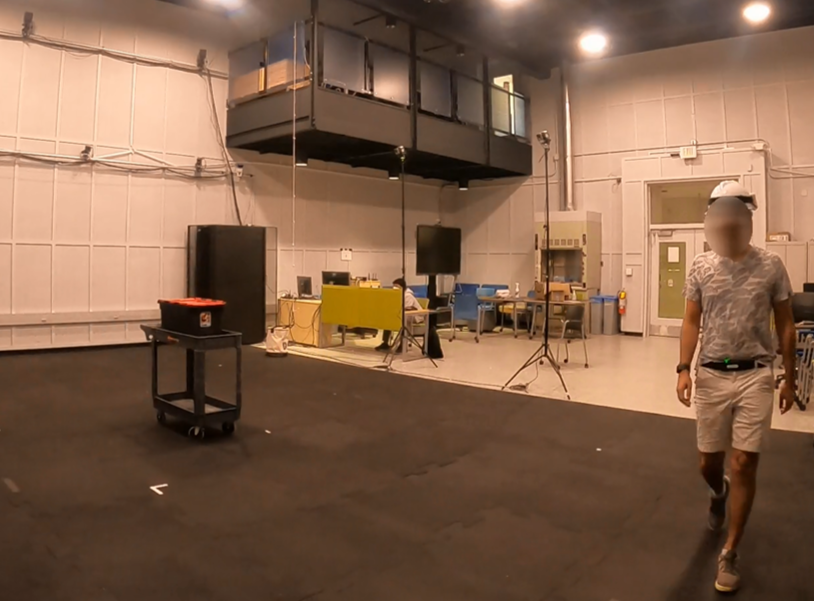
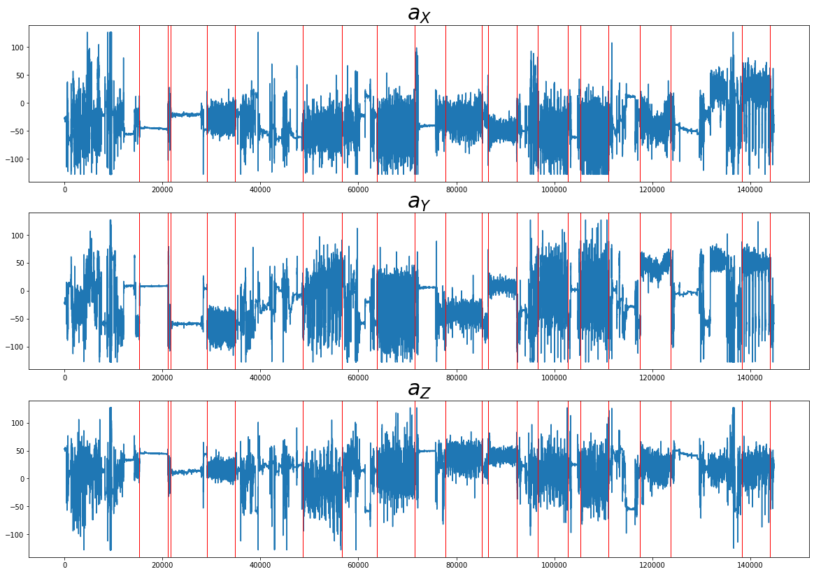
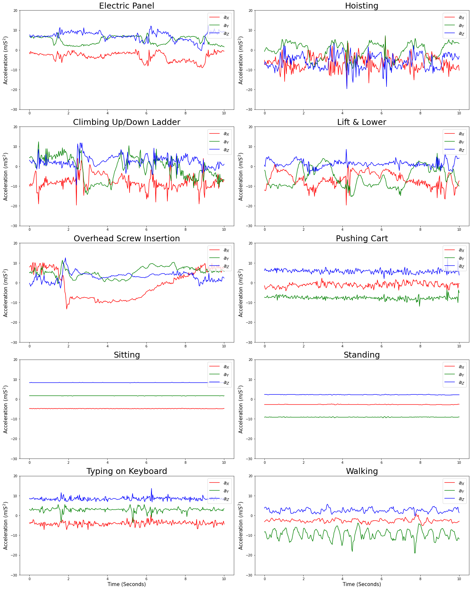
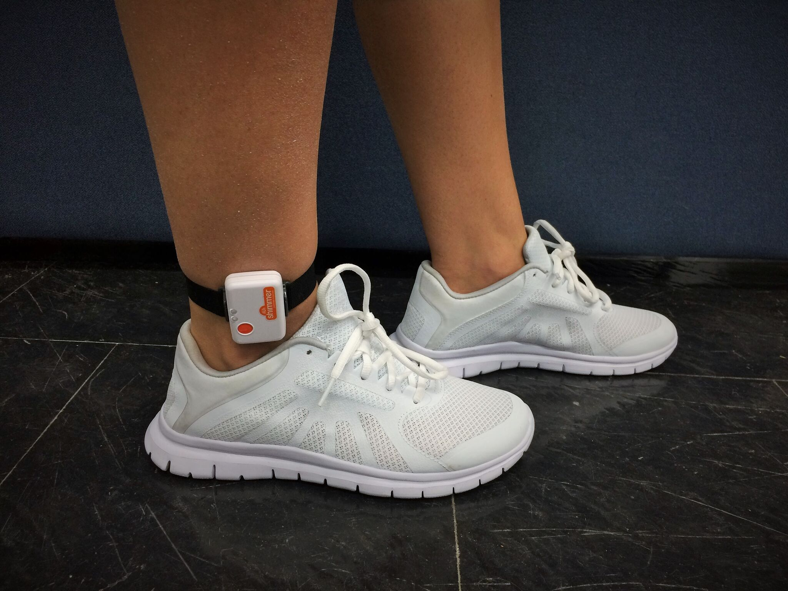
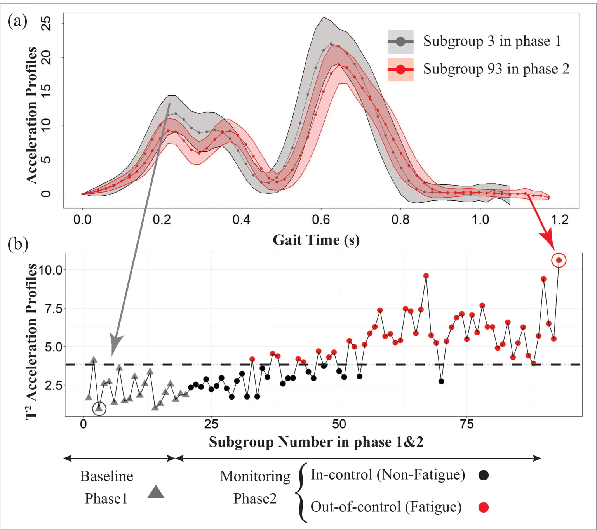
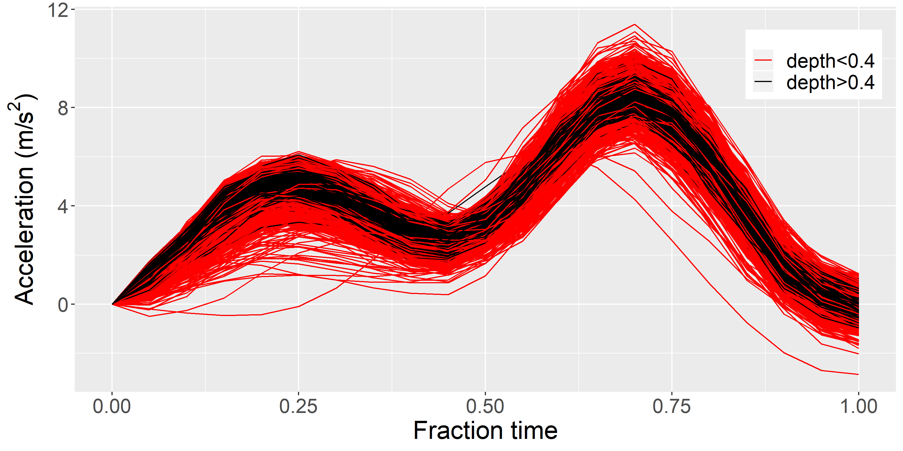
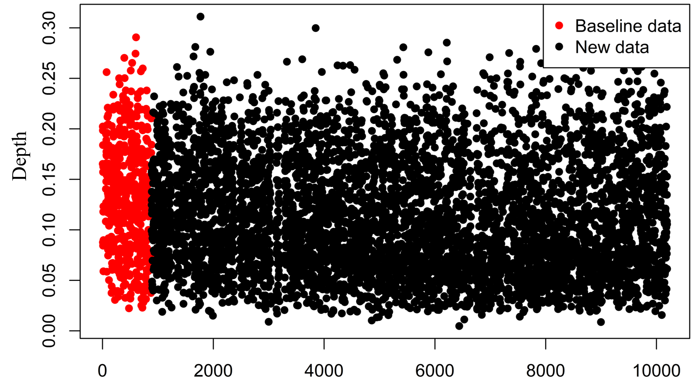
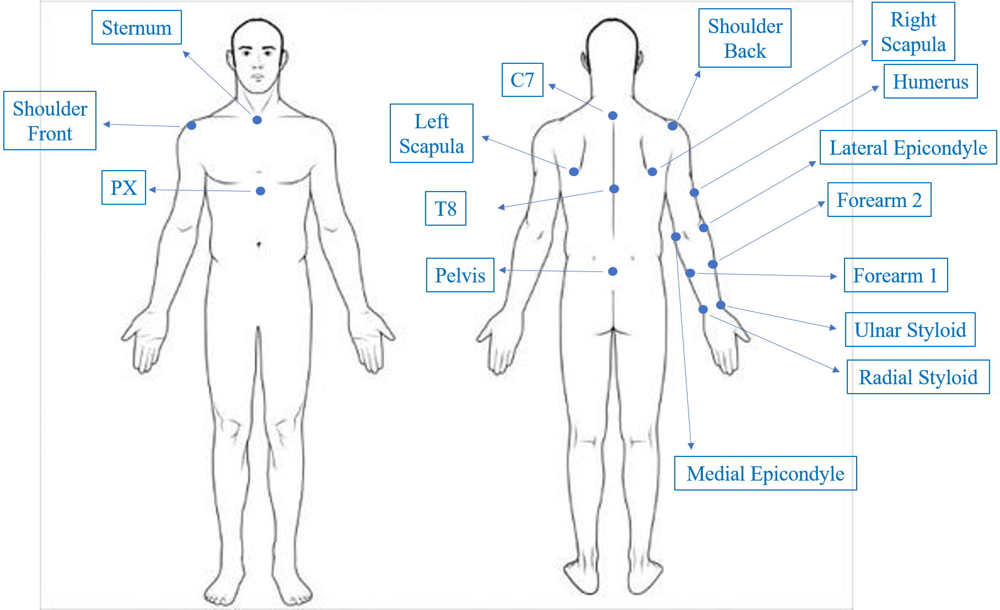
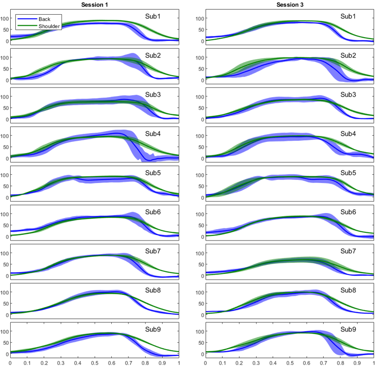

Human Activity Recognition in Electric Line Workers from Single Wrist Accelerometer
Human Activity Recognition (HAR) is used in a plethora of applications such as activities of daily living to predict the undertaken task using the data from wearable sensors. The research however been less concentrated on industrial applications. In a research that was funded by General Electric (GE), using a set of prepeiotory wearable sensors we collected data from a 40 participants to simulate the activities of electric line workers. Ten activities were included in this study which were rather more complex than the one included in most of the HAR literature.
As a more challenging task we tried to classify the 10 activities in our experiments using the data from a single accelerometer on the participant's dimonant wrist. We the effect of different features from the 3 domains i.e. time, frequeny, and time-frequency. Using a fixed length sliding window approach we further investigated the effect of 2 window sizes. As the simplest approach the time features were calculated as 10 statistical measures from the original X, Y, and Z acceleration signals in time domain. The frequency features are the Fourier coefficients calculated using the FFT approach. For the time-frequency domain we used the wevalet transform, using the filter bank approach. Using Daubechies mother wavelet (db4) the approximation and detail coefficients were obtained up to the maximum possible level.Next, we obtained 12 statistics from the last approximation and all detail coefficients and used them as the input features for the classifiers.
Also, we investigated the performance of multiple classifiers including Multi Layaer Perceptron (MLP), basic Recurrent Neural Networks (RNN), Long Short Term Memory Metworks (LSTM), k-NN, SVM, and rnadom forest. The deep learning techniques were implemented using TensorFlow python and the conventional classifiers were implemented using the Scikit-learn package in python. We observed a better performance for the combination of time-frequency features with the SVM classifier. Moreover, longer window lengths resulted in better classification performance as we expected.
Many classifiers that show excellent performnce in the data in the laboratory settings fail to perform similarly when launched. The interpretable machine learning techniques try to address this issue by evaluating the relevance of the features. In an effort to evaluate the relevance of the data that lead to the predictions we exploited the Local Interpretable Model-agnostic Explanations (LIME) method to find the important features for the prediction of different classes. Using the selected features in the frequency and time-frequency domains, we reconstructed the signals to provide insights about whether the perodicity, the non-stationary component, or the dispersion in the signals contributed to the predicted label.
This work is being prepared to be submitted to the IISE journal.
Sample Participants Wearing Different Parts of the wearable System
{kind=link}
The collected signal from a sample participant and the transition points.
{kind=link}
Sample windows of 10 seconds for each of the 10 activities.
{kind=link}
Gait Fatigue Analysis form Ankle Sensor using Hotelling's T2 Control Charts
Gait analysis is used for multiple purposes including for diagnosis, intervention, and monitoring of gait patterns in patients with diseases that adversely affect the gait such as Parkinson's disease patients and stroke survivors. It is also important for ergonomic assessment of the industrial workers in physically challenging occupations such as warehousing. While in conventional approaches the gait evaluation was performed as visual inspection by experts, the advent of wearable technology allows us to analyze the gait data collected by the wearable sensors in the form of signals by signal processing and time series analysis techniques. We investigated the application of the inertial measurement units (IMU) to detect the subtle changes in a 3-hours simulated warehousing task on 12 subjects. The simulated tasks included loading weighted cartons on a dolly, pushing the dolly on a set path (extended continuous walking), and then unloading the cartons at the starting location
We transformed the acceleration signals from local to the global frame of reference by removing the gravitational effects. Towards this goal, the orientation of the IMU was estimated by combining the angular orientation of the accelerometer and gyroscope by application of a Kalman Filter. After removing the gravitational component in the global frame, we calculated the acceleration magnitude and filtered the high frequency noise using a zero-lag 4th order low-pass Butterworth filter with a cut-off frequency of 10 HZ. Using a moving window segmentation algorithm we filtered the magnitude signal to isolate individual gait cycles. Next, subgrouped the gaits within each walking period for further analysis.
We developed a statistical process contro (SPC) approach to create a control chart in order to detect the subtle changes in the gait pattern. Three method consists of 3 phases: phase0, 1, and 2. In phase 0 we use the first 10 subgroups to computes the upper control limit (UCL) using a bootstrapping technique and use it to remove the outliers. Next, the phase 0 subgroups are used to compute the within-subgroup covariance. The phase 1 data are next used to calculate the UCL for the monitoring phase (2). In phase 2, the T2 is calcultaed for the online data. Any subgroup with the T2 larger than the UCL is considered out of control and indicates fatigue.
We also used the method on 3 popular kinematic gait features i.e. stride heigh, length, and duration. Uisng our method we calculated the T2 statistic for each feature as well as each feature pair as a decomposition approach. We created an allipse chart for the 3 feature pairs and calculated the univariate and bi-variate control limits to diagnose the out-of-control signal. While in some cases an individual feature may exceed its limits and cause the signal, another cause could be the change in bi-variate covariance.
This work is submitted to the Scientific Reports journal and is under review.
Shimmer 3 IMU Placement on the Right Ankle
{kind=link}
A Baseline and a Fatigued Subgroup of Segmented Gait Profiles
{kind=link}
Gait Features T2 Decomposition and Corresponding Ellipse Charts

Gait Fatigue Analysis form Ankle Sensor using Functional Depth and EWMA Control Charts
In this study we analyzed the gait data from the previous study and investigated the application of the exponentially weighted moving average (EWMA) method for detection of the changes in the gait patterns due to fatigue. The EWMA is a cumulative SPC approach and such approaches are designed to detect small and persistent changes in the data by using all of the observed data available at the current time point. Such methods work by accumulating the small changes in the controlled statistical variable that occured prior to the present time point.
We first segmented the gait cycles from the acceleration magnitude that was calculated after removing the gravitational effect. We next assigned the first 500 gait cycles to the baseline. Using the concept of functional depth we compared the gait cycles against the baseline (top figure in the right panel). We used two depth measures to calculate the depth of each segmented gait profile against the baseline. The 2 depth measures included the mode depth and the Multivariate Functional Halfspace Depth (MFHD). Mode depth calculation was computationally efficient however, the calculation of MFHD depth was computationally expensive. Therefore, we performed the MFHD calculations in parallel on 40 nodes on Ohio Super Computing (OSC) center.
After calculating the depth values for individual gait cycles we reassigned the depth values to their original subgroups and constructed the EWMA control chart by considering the 1st 10 subgroups as the in-control data. The control limit was calculated from the in-control data and used to detect the out-of-control subgroups in the online data. The subgroups with the EWMA statsitic larger than the control limit are considered fatigued. The bottom figure in the right panel shows the EWMA chart for a sample subject.
This is an ongoing project.
Functional Depth: Central Profiles Have Higher Depth Values
{kind=link}
MFHD Depth Values for All the Gaits in a Session
{kind=link}
EWMA Chart on the MFHD Depth from Above Figure

Fairness in Machine Learning
COMPAS is a machine learning (ML) algorithm that is widely used in the US judiciary system for considerations in pretrial detention and sentence determinationuses. It evaluates criminal on ver 100 factors and outputs a score that indicates how likely it is for the person to commit a crime in the future. These scores are then taken into consideration by judges when assigning sentences, determining bail/parole eligibility, etc. Critically, race is not one of the factors used in by COMPAS. ProPublica reviewed the output of COMPAS on a dataset of over 7000 individuals from Broward County, Florida. They found that the algorithm correctly predicted recidivism at similar rates for both white (59%) and black defendants (63%). However, when the algorithm was incorrect it tended to skew very differently for each of these groups. White defendants who re-offended within two years were mistakenly labelled low-risk almost twice as often as their black counterparts. Additionally, black defendants who did not recidivate were rated as high-risk at twice the rate of comparable white defendants.
To that end, in an ML course project we were assigned the task to optimize the post-processing evaluation methods to improve the fairness in 3 ML models. The 3 models were trained on a data set from the Broward county: a linear support vector regressor, a feed forward neural network, and a naive Bayes classifier. We invetigated 5 potential post-processing methods that enforce various constraints in attempts to reflect different measures of fairnessWe in ML. The evaluation methods included:
- Maximum profit/Maximum Accuracy
- Single Threshold
- Predictive parity
- Demographic parity
- Equal Opportunity
| Accuracy for African-American | 0.63 % |
|---|---|
| Accuracy for Caucasian | 0.63 % |
| Accuracy for Hispanic | 0.60 % |
| Accuracy for Other | 0.60 % |
| FPR for African-American | 0.51 % |
| FPR for Caucasian | 0.50 % |
| FPR for Hispanic | 0.51 % |
| FPR for Other | 0.50 % |
| FNR for African-American | 0.25 % |
| FNR for Caucasian | 0.24 % |
| FNR for Hispanic | 0.25 % |
| FNR for Other | 0.25 % |
| TPR for African-American | 0.75 % |
| TPR for Caucasian | 0.76 % |
| TPR for Hispanic | 0.75 % |
| TPR for Other | 0.75 % |
| TNR for African-American | 0.49 % |
| TNR for Caucasian | 0.50 % |
| TNR for Hispanic | 0.49 % |
| TNR for Other | 0.50 % |
| Total Cost | $757,737,810 |
| Overal Accuracy | 0.63 % |
Coding 5 Clustering & 4 Classification Algorithms from scratch in Python
As a course project in Data Mining and Bio-informatics (CSE 601), we were asigned to find clusters of genes that exhibit similar expression profiles. We were asked to implement 5 clustering algorithms in Python without the use of any existing packages. The 5 Clustering algorithms included:
- K-means
- Hierarchical Agglomerative
- density-based
- mixture model
- spectral clustering
We were also assigned to implement three classification algorithms without the use of any existing packages:
- Nearest Neighbor (k-NN)
- Decision Tree
- Naive Bayes
- Random Forest
Analysis of Back & Shoulder Posture in Palletizing Task
In a project that was funded by the Gore company we investigated the effect of fatigue on the back and shoulder postures. Nine participants were equipped with reflective markers at the upper body landmarks as shown in the top figure in the right panel. The participants were instructed to pick weighted boxes from a certain location and place on the pallet. The participants performed this task for 10 minutes in 3 consecutive sessions. The cartesian coordinates of the markers were recorded using the Vicon motion capture system. The data were post-processed in the Nexus software and exported for further analysis.
The marker coordinates were used to calculate the Euler angles at the soulder based on the ISB standards to find the flexion-extension, adduction-abduction, and the axial rotation. The back angle was also calculated with respect to the global vertical. We investigated the change in the back and the shoulder flexion-extension angle, their timing, and also the coordination between the two. The angles and results are visualized in the two bottom figures in the right panel.
In this project, the participants were also equipped with commercial wearable sensors including Xsens, Dorsavi, and the ADI wearable shirt. We validated the upper body angles calculated by each of these sensors against the Vicon data.
This is an ongoing project.Comparing the Standard Deviation in the Back and Shoulder Flexions Between 1st and Last Sessions

Reflective Marker Locations on the Body Landmarks
{kind=link}
Shoulder and Back Flexion-Extension During Placing in 1st and Last Sessions
{kind=link}